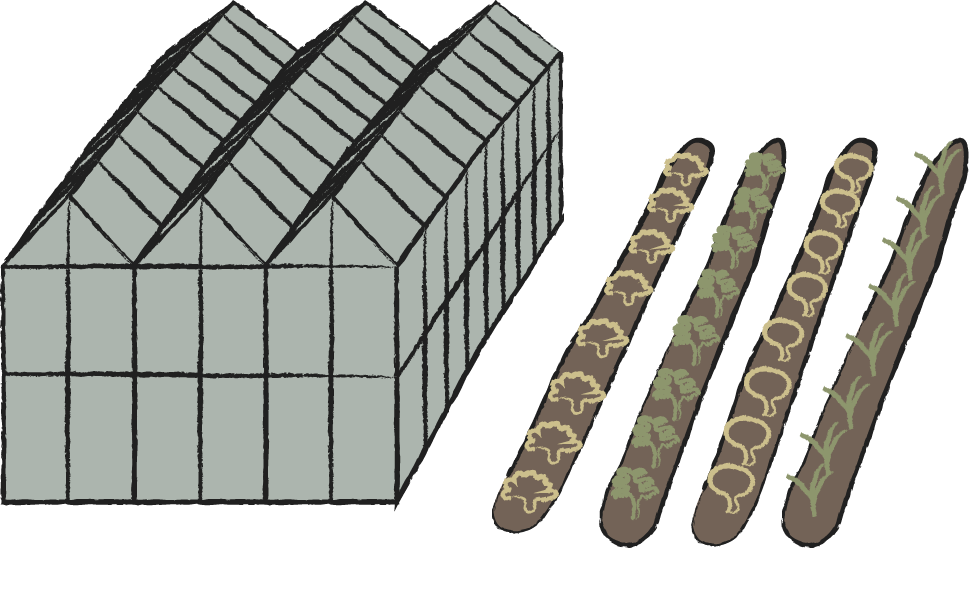
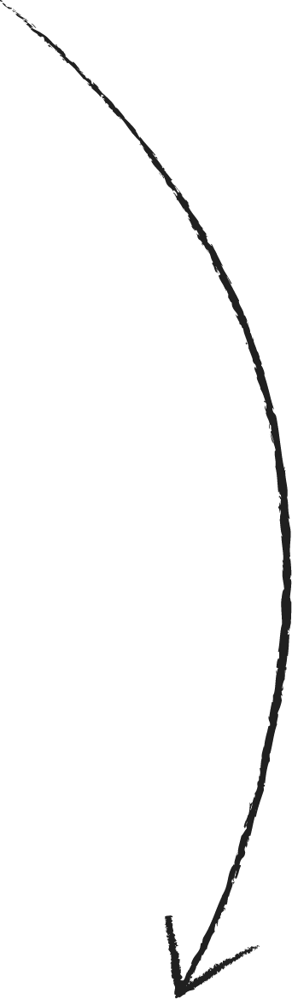
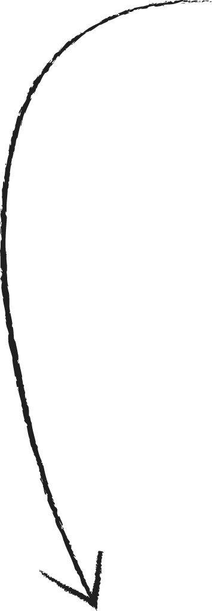
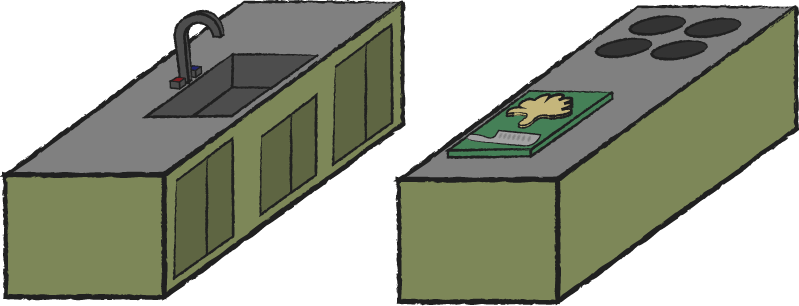
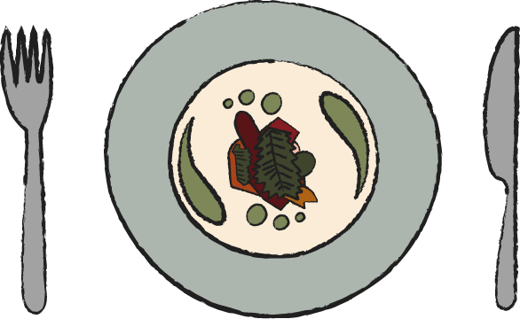

Over Restaurant De Kas
Restaurant De Kas bestaat bevindt zich in een kas die voor het eerst gebouwd was is 1927, toen werden hier bomen en andere planten verbouwd om te gebruiken in andere parken. Aan het einde van de 20ste eeuw was hier niet echt meer vraag naar en takelde het gebouw flink af. In 2000 werd het gebouw overgenomen door Jan Hageman die de kas ombouwde tot restaurant. Hiervoor moesten zij bijna alles opnieuw bouwen, maar hielden zij een paar van de originele balken en de schoorsteen.
Dit restaurant werd geopend 2001 en werd zo één van de eerste farm to table restaurants ter wereld. In 2018 werd De Kas overgenomen door Wim de Beer en Jos Timmer. Eerder kregen zij al een Michelin ster bij RIJKS in Amsterdam en nu is dat weer gelukt bij De Kas. Dit duo focuste zich vooral op de lokale en duurzame elementen van het bedrijf.
“In de ochtend geoogst, ‘s middags op het bord”
Restaurant De Kas heeft meerdere kassen en tuinen in Amsterdam en in de Beemster, waar zij al hun groente, fruit en kruiden verbouwen. De kas in Amsterdam wordt vooral gebruikt voor het telen van kruiden en eetbare bloemen, maar ook voor het ontkiemen van planten voor de kas en tuinen in de Beemster. In de Beemster hebben zij nog een kas en een hectare aan grond waar alle andere groente, fruit en kruiden in alle rust verder kan groeien.
  Alle groente, fruit en kruiden worden op het laatste moment geoogst en gaan zo snel mogelijk naar de keuken, zo blijft alles zo vers mogelijk. Op deze manier zul je ook nooit 2 weken hetzelfde krijgen bij het restaurant. Het menu bestaat iedere week uit de producten die klaar zijn om geoogst te worden.
De chefs maken hier weer prachtige gerechten van die daarna op de borden van de gasten terecht komen.